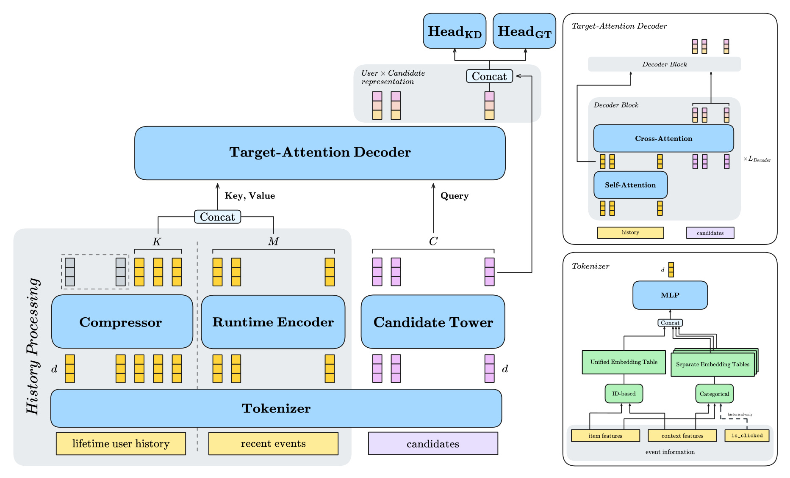
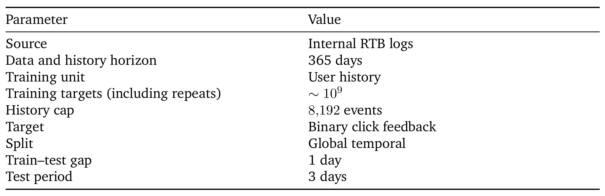
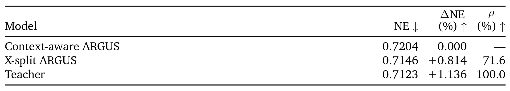
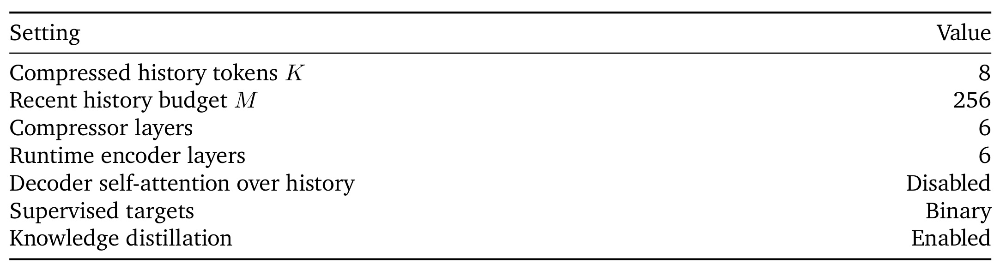
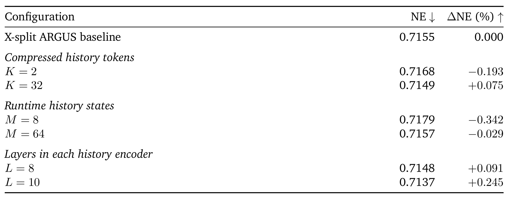
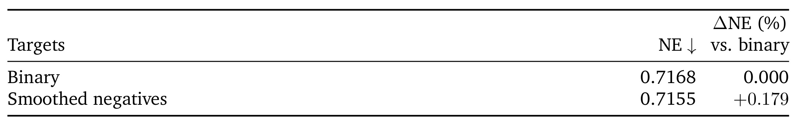
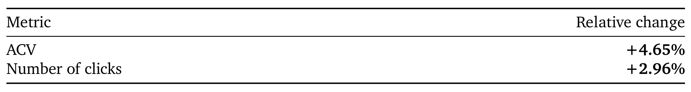
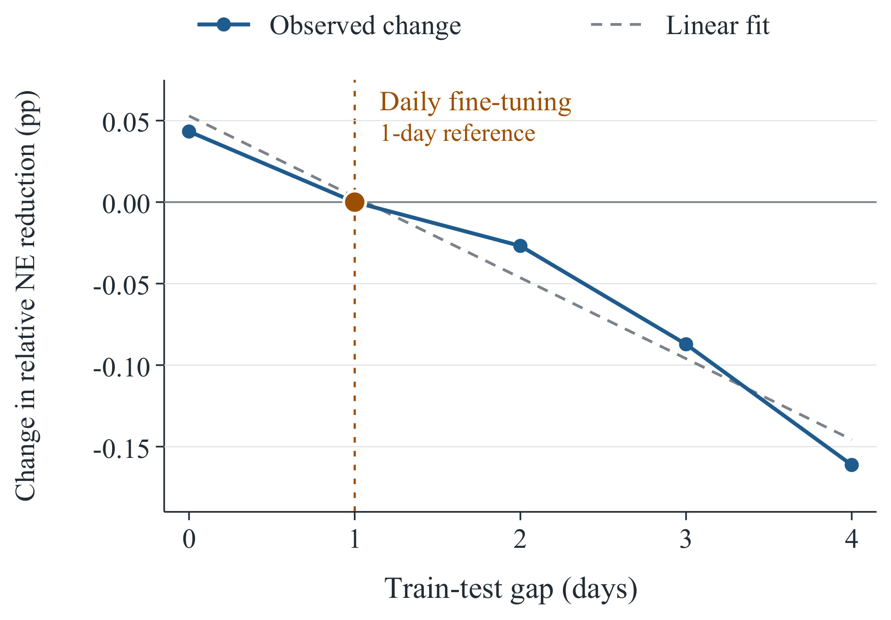
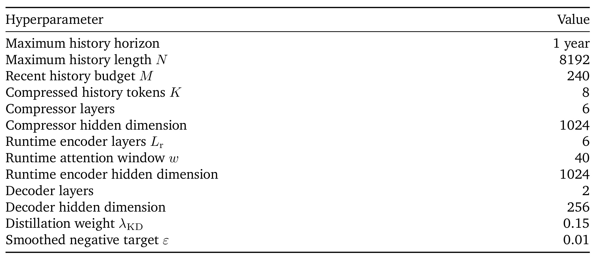

X-split Argus：学习可复用的历史 Token，提升点击率预估效率
Alexander Ploshkin、Nikita Stepanov、Alexey Pismenny、Viacheslav Ovchinnikov 和 Nikolay Savushkin 将广告排序里的长历史处理拆为离线压缩和在线候选打分，训练时用真实点击与完整历史教师共同优化。论文首页未披露一作机构，本文按一作机构未核验记录。论文于北京时间 2026 年 11 月 18 日提交 v1，列入 arXiv 11 月 19 日公告。本轮未核验到论文专属公开代码。arXiv:2611.24283
准确预估点击率需要同时保留用户的长期偏好、近期意图，以及与当前广告有关的历史信号。每次排序都处理完整行为序列会增加 GPU 计算和访存，历史编码依赖候选时又难以在多个广告之间复用。论文要问的是，将过往事件压成一组与候选无关的 Token 后，完整历史教师带来的预测增益还能保留多少。
1. 背景和问题
1.1 广告排序中的历史信息与执行次数
广告点击率模型面对的是已经给定的候选广告及其展现上下文。一次请求里，多条候选共享同一用户以及刚发生的行为，预估所需证据却随商品和广告变化。举例说，一个长期浏览数码商品且当天在查询旅游的用户，对机票广告和配件广告所需的历史线索可能位于不同时间段。把两类信号混进一个固定用户向量并做点积，约束了候选在打分时能针对性访问的内容。让候选通过目标注意力读取整条行为序列，则会增加需要在线保留的历史状态、被读出的键和值及每条候选的细粒度交互计算。论文的出发点是让长期证据跨请求存活，让近因信息按请求更新，并在真正需要判断一个候选时读取这些证据。
观测到的行为也带有标签语义。排序模型既需要看见一次历史曝光中用户没有点击，也需要保证当前待预估曝光的点击结果只能作为训练标签。把面向整个序列的训练样本做成自回归预测可以重用历史编码，每次站在不同的位置预测其后的反馈，减少对一个用户的长前缀反复编码。但若用双向状态或不小心取到当前事件的反馈，就会造成训练与评估时的未来信息泄漏。因果历史编码解决状态可见性，而候选打分需要在合法历史内保持表达力。这使得问题与常见的下一个物品生成有所不同。这里的候选身份和元数据是给定的，输出是已给定广告的一项点击概率，同一历史中的曝光、点击和待预测广告可以被一致地解释。
论文的实际对照 Context-aware ARGUS 已经有历史压缩和实时用户编码。它把事件上的上下文和物品部分拆开，在线用户塔能看到打分时可获得的上下文，物品塔则表示候选广告，最终通过双塔点积打分。因此，这个对照已经利用了长期和近期行为，也使用请求上下文。论文的新增模型将历史塔的最终产物从供点积的表示变为可被候选查询的一组状态，训练上让真实点击和完整长历史教师的候选级反馈共同塑造这些状态。只按有没有历史压缩来解释对比，会遗漏实际变化最大的候选交互和训练监督。
1.2 与长序列压缩、检索及蒸馏的关系
候选相关检索是解决长历史的一条路线。SIM、TWIN 等先从长行为中选出与目标更相关的事件，再做精细交互。它可以保留被检索到的显式商品和时间证据，但若同一个用户同时面对大量不同候选，就要为不同的查询执行筛选或管理可被搜索的长状态。离线聚类与分层池化则预先构造更少的状态。VISTA 等已经研究了可保存、可复用的多向量摘要和候选注意力。X-split Argus 的长分支用原有事件位置的因果上下文状态充当摘要，不需要专门的查询 Token 或固定的兴趣聚类。它的区分点是取同一次编码中的末端状态以支持多个训练截点，保留独立的近期分支，再用完整历史教师约束有损压缩所保留的信息。
与只学习重构输入的压缩器相比，本文的训练希望保留对后续广告点击预测有贡献的内容。一条很老的行为可能只对少量候选有用，未必会在全用户的下一事件预测或序列重构中形成足够明显的梯度。教师使用同一批保留事件但不压成少量向量，能把完整历史在特定候选上的响应作为训练信号传给学生。与 TM20K 的接近点正是这个有损表示对齐问题。本文关注的约束是在线分数只能访问紧凑历史和近期状态，长历史在离线压缩时仍然存在。将蒸馏解释为补上线上不可采的额外用户特征，会混淆历史输入可用性和线上执行预算。
部署上要区分三个执行边界。原始历史编码跨请求复用，请求内实时编码和可选的历史自注意又可跨候选复用，最后候选编码与候选查询仍要逐候选执行或批量调度。只统计模型执行了一次 Transformer 或记录了多少 Token，容易漏掉这些阶段对应的缓存查找、内存搬运和候选扩展成本。论文保留了近期编码器，因为已有长历史快照通常会落后于实时事件，完全依赖快照会牺牲当天的意图对分数的影响。快照截止位置与在线窗口起点又可能发生重叠或留下空档。在有更新延迟的系统里，增加近期窗口还可能修补覆盖断层，它同时改变历史证据与资源开销。
在这个设计下，缓存需要支持可读的截点和刷新节奏。对于活跃度高的用户，固定数量的近期事件覆盖的时间更短，两次刷新之间更容易积累超出窗口的新事件。对低活跃用户，长期快照可能覆盖大部分近期窗口，原始事件重复出现在两个分支也不代表状态完全相同。长期状态是全因果前缀的输出，近期状态由局部注意力与服务输入边界共同决定。将缺口和重叠混为一个“覆盖长度”数字，会使线上观察无法定位究竟是快照滞后、历史输入不足，还是训练状态与线上状态不一致。论文提供了判断这些边界所需的变量，但没有给每种覆盖状态的线上分布。
1.3 论文承诺的比较与证据边界
核心比较包括三层。第一层用共同的 RTB 测试曝光衡量完整新模型是否优于生产基线，又距离完整历史教师多远。第二层保持若干训练和历史分界条件不变，改变压缩状态数量、在线事件预算或两个编码器的深度，观察损失如何变化。第三层检验真实业务上的价值指标、点击及线上资源，报告同流量和同预算情况下的 GPU 配置变化。离线与线上回答的是不同问题：前者用点击标签估计概率误差，后者让排序进入系统反馈并改变最终获得曝光的广告。即使同一模型同时改善这两类结果，也不能从离线分数推算线上每单位收益，或只凭 A/B 就得出某个结构模块的边际贡献。
选型上，这类结构与把长上下文直接拼入语言模型提示有可比的约束。若长期记忆要供多个问题或任务重复使用，记忆编码最好只读取用户已发生的数据，查询本身在后续读取阶段才出现。对应到训练，问题可以由历史编码参考的真实监督与更昂贵的长上下文模型共同驱动压缩。但是广告排序的点击标签来自实际曝光，完整教师也只处理保留事件，其证据与离线可学范围都局限在日志和任务本身。将候选独立的缓存接口迁移到个性化问答时，需要显式评估少见信息能否被检索与错误记忆是否会反复被引用。论文的直接结论只覆盖点击预估和所报告的广告场景。
2. 方法
2.1 学生架构与服务
学生由历史压缩器、实时用户编码器、候选编码器和带交叉注意力的解码器构成。历史事件的输入包括物品特征与已经发生的点击反馈，物品特征由标识符及离散化元数据组成。长历史压缩器采用因果自注意力，每个事件输出一个带前缀信息的状态。在选定截点之后，取该前缀的末端若干个状态作为摘要。实时编码器读取近期行为和已有反馈，每层用滑动窗口做因果自注意，堆叠层数可以把信息沿时间传播得比单层更远。解码历史沿序列维拼接，要求两类状态处在相同的特征维度；满窗口时供解码器访问的历史长度就是两类预算之和。
符号解释：$H=(e_1,\ldots,e_n)$ 表示按时间排序的事件，$C$ 为长期压缩器，$c_i$ 只依赖截至第 $i$ 项的前缀，$b$ 是离线快照覆盖的最后一个位置，$K$ 为缓存状态数，$Z(b)$ 为这些状态按顺序组合的表示。$E$ 是实时编码器，$H_{\mathrm{recent}}$ 是可用近期事件的切片，$U$ 是对应状态。$V$ 是历史记忆，分号表示沿序列拼接。公式展示有足够历史时的选取方式。末位置 $c_b$ 可以通过因果注意力访问截至 $b$ 的保留历史，取末端状态压缩是对已上下文化的表示抽样，因此其信息范围不能按最后 $K$ 条原始行为理解。代价是信号能否穿过这个学习到的瓶颈取决于压缩目标和训练分布。

Figure 1 从底部开始区分长期行为、近期事件和待打分广告。黄色 Token 属于历史路径，紫色 Token 属于候选路径。历史压缩器上方的虚线框标注早期状态，实际只送出末端的一组；实时编码的状态也会沿序列维接到这组摘要后，历史整体为解码提供键和值。候选塔输出的单个表示作为查询参与交互，自己的点击标签没有进这条输入边。右上角的放大框把可选的自注意力限制在历史内部，再由候选通过交叉注意力访问历史。这一点保留了同一请求中候选之间的独立性：一次请求中的广告不会因为并行评分就被彼此当成附加上下文。最上面把从历史读出的表示和原候选表示按特征维拼接，两个训练头共享拼接后的输入，真实标签头可以继续使用候选本身的信息，辅助头则承接教师的点击分数。右下角把 Tokenizer 拆到特征层。物品与上下文可以贡献标识或类别特征，分别进入图中的统一标识嵌入表与独立类别嵌入表，拼接后由多层感知器生成事件表示。点击字段的虚线标的是仅限历史，候选塔不会从待打分广告读入其自身反馈。中央多列紫色状态代表多个候选各自的一枚 Token，右上子图将同一份黄色历史状态送至解码块，每枚紫色 Token 仍保留独立的输出路径。整幅图将请求间共享、请求内共享和候选特有计算分到了不同接口，才能把训练可微与在线可缓存同时保留下来。图中没有给出缓存读取时延或候选数量，视觉布局只能说明数据与梯度流向。
符号解释：$x_a$ 是广告 $a$ 的标识及元数据，$A$ 是候选编码器，$q_a$ 是单个候选 Token，$D$ 是以候选为查询的解码器，$d_a$ 为读出用户记忆后的候选状态，$r_a$ 是交互态与原候选态沿特征维拼接的结果。解码器可先对 $V$ 内的历史位置做全注意力。所有进入 $V$ 的位置都早于被预测事件，历史状态彼此交流依然符合标签可见性。可选自注意力从 $K+M$ 状态自身得到结果，不需要候选 Token，其缓存级别仍可设为请求内共享。之后的目标注意力和预测头对候选分别计算，实际 GPU 利用取决于候选批量形状及实现，并没有因为历史共享便消失。
若查询时已有 $n$ 个可用事件，实时切片从 $s+1$ 到 $n$，其中 $s=\max(0,n-M)$。快照截止 $b=s$ 时两段相邻；$b<s$ 时区间 $b+1$ 到 $s$ 进入两支之外；$b>s$ 时 $s+1$ 到 $b$ 同时由两个分支表征。可见复用接口需要记录历史覆盖边界，长历史向量的刷新时间直接决定模型在线可访问的证据。 同一套候选评分逻辑可以吃到三种覆盖形态。文中没有在缺口发生时指定补偿或重算策略，不能把日批刷新理解为连续覆盖的保证。
2.2 完整历史教师
教师用较大的因果 Transformer 读取以同样上限保留的历史，不需要把事件编码压到 $K$ 个摘要。它沿用自回归反馈预测的形式，物品与反馈拆成两个相邻的 Token。目标位置的分数从物品状态读，物品后面的实际点击当时尚未可见。之后该点击成为新增历史事件的信息，可以用于更晚的预测，这使教师可在一次因果前向中给多个目标位置产出监督。学生的候选只保留物品 Token，历史编码的反馈作为已发生事件的输入特征，因此教师与学生不能按内部序列索引直接对齐。
符号解释：$\widetilde H$ 是拆开物品与反馈后的教师序列，$T$ 为教师编码器，$v^T_j$ 是其位置 $j$ 的因果状态，$\pi(t)$ 指事件 $t$ 的物品 Token 位置，$g_T$ 为点击头，$z^T_t$ 为教师原始 logit。教师独立训练并冻结，学生按事件位置读取它的分数后反传，教师不会被学生目标更新。因为来自同一目标事件与同一份保留行为，教师和学生的区别集中在建模容量和在线表示约束。保留历史只覆盖论文的数据窗口与截断上限，所谓完整历史指这份保留序列；教师从未访问未记录行为或无限长度历史。它提供预测质量参照，线上请求也无需拉取教师所需的大量原始历史。
2.3 端到端自回归训练
一条用户序列在同一次训练中可以包含多个用于点击监督的位置。两个学生历史编码器各做一次对共享序列的因果前向，然后依据每个目标重新划分长期前缀和最近事件。这样处理既让未来目标能使用更丰富的已发生上下文，也避免为每个目标重算所有长前缀。训练选择时先取目标前的最近 $M$ 个位置，剩余前缀留给压缩器。当历史不够长时，公式用零截点定义边界；完整窗口示意上要求长期段足够抽出所有缓存状态。
符号解释：$t$ 为被监督事件，$M$ 为实时预算，$b(t)$ 为训练期间分支边界，$u_i$ 是同一次实时编码完整序列所得的因果状态，$U_t,V_t$ 是为目标分别截取、拼接的实时记忆和完整记忆。$t-1$ 保证当前曝光的标签不进入历史。训练中 $U_t$ 的早期状态可能借由滑动注意力读取所选窗口之前的事件。服务时实时编码器从最后 $M$ 条原始行为重新算，早期几个状态缺少训练时已有的左侧上下文。这个输入差异即使在线上 $b=s$、两个分支恰好相邻时也会存在。验证如果直接切共享训练前向而不重算最近窗口，会高估线上真实可用的近期历史状态。
符号解释：$g_{\mathrm{GT}}$ 为监督预测头，$r_t$ 为目标事件的共享拼接状态，$\sigma$ 把 logit 转为点击概率 $p_t$，$y_t$ 为二值点击，$\ell_{\mathrm{GT},t}$ 是二元交叉熵，$\varepsilon\in[0,1)$ 是仅用于负例的平滑强度。开启平滑时，未点击样本由零替换成 $\varepsilon$，点击样本仍为一。作者的出发点是未点击也可能来自没有看见广告。平滑将惩罚方向变得温和，但上线 CTR 仍由同一个监督头输出，离线仍应以观测点击衡量概率质量。平滑效果受曝光样本与负例采样方式影响，平均损失变好也不保证各流量桶的概率校准同步改善。
符号解释：$z^{\mathrm{KD}}_t=g_{\mathrm{KD}}(r_t)$ 为辅助头预测的原始 logit，目标是截断梯度的教师 logit $z^T_t$，绝对值为逐样本的线性误差。$L_{\mathrm{GT}}$ 和 $L_{\mathrm{KD}}$ 分别聚合各自的逐位置损失，非负的 $\lambda_{\mathrm{KD}}$ 控制辅助监督的权重。教师目标不经温度概率转换，平滑也不改变教师 logit。两个头读同一个学生表示，真实点击和教师误差信号经过解码器传到实时编码器和长历史压缩器。辅助头启用在训练中，服务只执行监督头。该梯度通路说明离线缓存是服务分工，训练并没有把压缩器当成固定预计算特征。线上发布若刷新学生权重，需要保证现存缓存的状态能被对应版本的在线解码器正确解释，论文只提供刷新频率，未披露版本切换协议。
3. 实验结果
3.1 数据、时间和指标
离线比较都使用同一组真实 RTB 曝光，与线上随机分流的七天窗口分开。模型参数测试期间固定，但历史可随着每次曝光累积而刷新，近期状态按只输入最后 $M$ 条行为的实际窗口重算。保留测试间隔内和评估当天已发生的历史，可以模拟部署前已积累的行为而避免把整个测试期冻结成一份用户状态。

Table 1 的两列给出一套内部真实竞价日志的数据定义。训练单位是用户历史，约十亿是训练目标数且包括重复，不能解释成十亿独立用户或独立物品，也不支持据此估算测试集样本量。三百六十五天是数据和历史视野，八千一百九十二是按原始事件计算的历史序列上限，对应用户事件数的第九十九点五百分位。教师将目标拆成物品及反馈时使用自己的序列长度，不能把原始事件上限当成教师的 Token 个数。按全局时间而非逐用户随机拆分，保证同一测试日期模型面对共同的时间边界。训练和测试之间留一天，之后测试三天，用于模拟模型训练到可服务之间的等待。间隔中的新行为可被后续测试请求看到，它们自身仍然没有进入这个固定检查点的参数学习。由于只使用同一套内部日志，表中的时间和规模提供了比较口径，但从这里看不到其他 RTB 系统、冷启动或跨月季节变化中的稳定性。还应区分日志覆盖的历史视野与离线缓存更新的频率，一个是训练和输入事件的保留长度，另一个决定实时打分时看到的长期状态是否够新。
符号解释：$\mathcal E$ 为共同测试曝光集合，$w_i$ 为抽样校正权重，$\ell_i$ 为用原始二值点击 $y_i$ 算的交叉熵，$p_0$ 为测试集整体背景点击率。NE 是加权模型损失除以该背景点击概率的二元熵。$v$ 和 $v_{\mathrm{ref}}$ 分别表示模型与所在表格的参考 NE。相对降幅为正即 NE 下降；不同表可使用不同参考，对应的列值不能直接相加。作者说该测试集上相对变化百分之零点一达到统计显著的量级，未给每个单元的不确定区间。NE 展示四位小数，表中相对降幅用未舍入数据计算，直接使用表面数值可能得到略不同的最后一位。
3.2 完整模型对比
生产基线是 Context-aware ARGUS，完整的新学生同时具备目标注意力、辅助蒸馏、历史记忆自注意力和负例平滑。完整历史教师作为预测质量对照，它服务时逐请求处理保留的长序列，还要在实时用户资料里保留相应事件，作者认为不符合原系统资源约束。

Table 2 的第一列是完整模型配置名称，NE 自上而下为 0.7204、0.7146 和 0.7123。学生相对生产基线降低 0.814%，教师降低 1.136%。第三列把基线定义成零，最后一列再用教师带来的绝对 NE 差作为分母，学生保留 71.6%，教师定义为百分之百。所以 71.6% 既不是教师准确率的比例，也不是运行中成功保留的历史事件比例。学生与教师还剩约 0.0023 的表面绝对差，经舍入可用于读数量级而不应再精确复算相对列。作者只测了这三个整体配置，不能从表中分解历史自注意力、压缩器可训练、蒸馏或负例平滑各自对这一降幅的分成。生产基线本身已有近期和长历史两路表示，因此读者也不应把能否使用长历史当成区别。最直接的证据是：当历史必须表示成可缓存的少量状态、近端按实际在线窗口重算之后，这个完整设计仍然拿到大部分教师相对原生产模型的预测收益。离线 NE 统一衡量点击概率误差，它仍缺少排序曝光、竞价约束和最终价值的变化，需和随后真实流量对照一起读。这组结果也没有说明在统计相同总 GPU 和相同缓存存储预算下哪一种配方最优。
符号解释：$v_{\mathrm{base}}$ 为所评生产基线 NE，$v_T$ 为完整历史教师的 NE，$v$ 为学生的 NE。若换一个生产基线，哪怕教师和学生的绝对 NE 没变，保留率也会改变。教师与基线几乎打平时分母很小，该比例会对误差更敏感。作者用同一折算口径说明资源受限的学生接近大模型参照，未将其定义为跨任务通用指标。
3.3 历史预算与双编码器深度
作者先把完整配置问题收缩成单独的消融基准，再比较历史接口上的局部预算。固定以前缀划分和初始预算决定的分界后，改变 $K$ 不改变长期段负责的历史截止点；改变 $M$ 只要求将最后 $M$ 条事件重新编码，长期段的前缀仍固定。这个协议有助于看出时间证据被削弱或增加后的局部变化。

Table 7 的设置列和值列规定了后面三组扰动从哪一个模型起步。基准保存八个长期状态，实时使用二百五十六条事件，两个历史编码器各六层，解码器内部的历史自注意力关闭，点击监督保持二值，蒸馏开启。此表决定了为什么 Table 3 第一行和完整模型主结果有不同的 NE，不能仅因两处都有模型名就共享误差改善的分母。附录还说明窗口按配置可见长度除以实时层数后向下取整，深度消融期间固定它，不随新深度重算。由此导致增深实时分支既增加非线性变换次数，也增加可传播的历史范围，对两个作用都没有独立度量。实时输入长度依然需要单独列出，即使两个配置层数相同，可被线上看到的原始行为起点也可能不同。二值标签在这张表明确开启，另一套负例平滑配对要到单独表中判断，不能从这里把损失差直接归给尾部历史。这个基准最适合回答预算变化的方向和相对敏感性，但与已部署的实时预算不是同一数值。

Table 3 里所有相对变化均以 NE 为 0.7155 的消融基准计算，负号表示变差。只保留两个长期状态至 0.7168，下降方向标为 −0.193%，增加到三十二个状态改善到 0.7149，相对收益 +0.075%。从八降到二的损失大于从八升到三十二的收益，且后者小于作者给出的百分之零点一显著量级。压实时历史的两行中，八条新事件变为 0.7179，−0.342%，六十四条为 0.7157，−0.029%。在这些试验点上，激进压缩近期证据比小幅提高长期容量有更明显影响。深度的八层和十层分别达到 0.7148 和 0.7137，表中相对降幅是 +0.091% 与 +0.245%。两个编码器一起加深，未固定算力，也未缩小单层实时注意力窗口，因而容量变化和跨层感受野同时进入结果。虽然十层行的表面 NE 小于完整学生行，两个比较有不同配置，主表也没有把它当成生产模型。没有同一资源下的训练时间、GPU 需求或请求尾延迟消融，不能用这一列确定生产容量最优点。对只有很少历史的用户或实时快照缺口特别大的用户，平均 NE 也不能代替分层表现，需要按实际可用历史覆盖重新核验。

Table 4 把压缩状态锁定为二，二值和负例软化两行所比较的变量是训练标签。参考 NE 为 0.7168，平滑后为 0.7155，相对下降 0.179%，超过作者所给的百分之零点一量级。这个结果无需在请求路径多做一次推理，平滑只是改变训练损失使用的目标。表中的 0.7155 恰好与 Table 3 的八状态二值基准相同到四位小数，仍是两个不同配置，也没有给出未舍入差值供进一步求等。由于配对只在 $K=2$ 下给出，无法从此判断线上八状态或开启历史自注意力后的增益，也不能把它加到主模型相对生产基线的收益上。更值得跟踪的是平均 NE 以外的误差分布。未点击的展现实例可能是没有看见广告，也可能确实无兴趣，统一微小软标签无法区分两者。一套独立分层需要按展现位置、可见交互和用户活跃度观察预测概率是否系统性抬高；论文没有报告这些分箱，故表中改善只支持固定配置下加权测试损失的方向。表中使用的评分标签还是实际观测结果，软化不是重新定义线上点击。
3.4 在线表现与资源
在最大的广告界面中，两组分别占该界面流量的百分之六，实验七天。用户标识和实验盐做哈希，跨请求保持同组。作者描述该界面占整个 RTB 流量大约一半、每秒约十万请求，后者指整个界面。对照继续使用 Context-aware ARGUS，实验使用新模型。

Table 5 用相对变化列报告内部广告转化价值 ACV 增加 4.65%，点击次数增加 2.96%，两项作者均给出 $p<0.001$。ACV 反映相同广告预算下产生的转化货币价值，是作者接受广告实验的主要指标。点击列为点击数量，不代表 CTR 上升 2.96 个百分点，也不能拿该列与 NE 改善相加。约十万请求每秒是整个评估界面的体量，而非单个实验组、更非模型单卡吞吐，实验比例也按该界面独立解释。一月后作者报告反向实验确认增益，但没有披露效应值、流量窗口或统计区间，因而只能记录其确认陈述。这个表没有展示对两个指标的绝对基数、用户或广告主分层、价值计算细则、置信区间及上市前后流量变化，收益外推到另一推荐场景还需要重新实验。A/B 评估的是整套变更在广告竞价链路中的效果，历史摘要、候选交互和训练策略同时进入，不宜为单个组件分配等比例线上业务贡献。实际可部署性的另一半在表外，是同类型线上 GPU 的新增需求。
服务满足原 ML 请求的大致数百毫秒时延预算。同等流量下实际用了比生产对照多 15% 的同类在线 GPU。没有公布分位延迟和单卡饱和曲线，不能把这个数换算为每条请求耗时的精确增幅或容量承诺。作者还增加每日历史压缩、嵌入存储和模型更新，称日批压缩和微调 GPU 开销相对持续在线推理较小，未给占比与峰值。历史状态存为 BF16，有标准存储压缩后的向量库达到数百 GB，原始事件库单独保留。
符号解释：$S_{\mathrm{user}}$ 指每个用户历史向量未压缩负载，$K$ 是状态数，$d_c$ 为每个状态的维度，二是 BF16 每元素字节数。以线上八个状态、维度一千零二十四计算，每用户仅向量有效载荷为十六 KiB。向量库总占用还会受存储压缩、索引、复制、冷热分层和版本机制影响，公式不包含原始事件、请求级临时状态与线上缓存读带宽。
3.5 更新频率与配置
为了区分刷新历史和刷新模型的影响，作者固定一个 X-split ARGUS 检查点，改变最后训练事件到一次单日测试开始的等待时间，同时仍以测试预测前可用的数据更新用户历史与离线摘要。每个单日与该日生产系统比较，再把等待一天的相对优势置为零。

Figure 2 横轴是最近训练事件与测试开始的间隔，纵轴是相对 NE 降幅的变化，单位为百分点，图例用蓝线连观测值，用虚线画线性拟合。橙色竖标指出一天参考，零天点在零线上方，四天点约在负零点一六百分点附近。作者概括为相对优势随时间每天损失约零点零五个百分点，指相对生产系统的 NE 改善变小，并非模型绝对 NE 每天变坏同一比例。各单日的数据样本和背景 CTR 都可能变化，基线和学生是在当日比较，图中也没有画误差带。尤其重要的是两条历史路径仍在刷新，观察到的下滑提示更新用户状态不足以消除固定模型在这段时间的相对劣化；它没有把人群变化、广告分布变化和模型更新收益逐项分离。当前生产策略是用最近三天的预测目标每日微调，加上备数、训练和部署，最近训练事件到打分大概仍隔一到两天。零天观测在该实验更优并不能直接预报小时级更新的收益。生产决策还需要把检查点交付、向量重算及新旧版本兼容的时间都计入，而图只对模型训练数据的滞后作横轴。

Table 6 左列列出真实部署的模型和训练选项，右列给出对应的实例值。历史一年且序列上限八千一百九十二，近端在线取二百四十个事件，由每层窗口四十乘实时编码器六层得到该配置预算；长支路输出八个状态。两个历史编码器各六层且隐层维度均为一千零二十四，候选解码器两层、宽度二百五十六。蒸馏权重零点一五，平滑负例目标零点零一，表里的训练设置不额外增加线上蒸馏头运行。目标注意力读取的历史上限按配置是二百四十八个状态，真实短序列可能更少，不能据此推出所有请求的输入形状。这个部署配置和离线消融的二百五十六条近期事件不同，隐层宽度差也不足以推断内部张量投影、缓存搬运和实际算子延迟。附录没有给训练批量、完整复现代码、压缩向量库命中率或上线 GPU 型号，因此从表中可建立复现起点，无法对云上开销作精确复刻。把该表的窗口和图中滞后日数放在一起也能看出，原始窗口规定了可用事件数量，参数新鲜度和摘要时间戳仍需单独记录。
4. 总结
4.1 可复用接口决定压缩器怎样训练
这项工作的主要工程判断是将历史编码复用到候选打分之前，同时保留多个供目标读取的状态。全历史教师提供候选级误差信号后，压缩器负责为后续查询保留有用信息，实时编码器负责吸收快照以后的行为及同一请求的短时上下文。线上增益与资源数字合起来说明，该界面在既定延迟预算内接受了更多 GPU 换取业务收益。对已有用户记忆的系统，落地讨论可先看能否让产物携带截点、历史版本和输入可见性，再看候选是否只在消费路径介入。这影响摘要可缓存、可回放与新旧权重兼容的程度。
如果将这一接口迁移到 RAG 或个性化 Agent，可以把过去交互先整理成多个可复用记忆状态，将本次会话单独保留，最终用当前问题选择性读取；昂贵教师只在训练时使用完整轨迹。评估时需要像本文拆分 $b$ 和 $s$ 一样，报告快照覆盖、在线补足和重叠；进一步应覆盖冷门事实与过去一次性约束，而不能仅以平均回答正确率或响应费用衡量。记忆无论如何压缩，应用输出需要追溯证据时还应有可回到原始事件的路径，本文不涉及这类引用机制。
4.2 局限与后续跟进
- 整体收益缺少组件分解。 主结果比较完整配置，自注意、目标交互、蒸馏、平滑的单因素与交叉消融不齐。线上成本也是整套模型的成本。边际价值尚不能归到任一新增组件。
- 近期状态的训练和服务条件有差异。 当前共享训练前向可能让近期早期状态读到线上窗口以外的行为。固定离线切分便于对照，也无法替代生产快照分界随用户和刷新而变化的分布。
- 概率质量和商业收益缺分层。 NE 参照由总体背景率定义，表中没有校准分箱、曝光分群或长尾广告效果。七天实验报告统计门槛但没有绝对基数、置信区间和反向实验明细，弱流量桶可存在不同方向。
- 线上总资源账不完整。 报告约束下的同类线上 GPU 增幅支持与原基线的容量比较，缺少端到端缓存访存、离线任务峰值和完整向量存储配置。检查点更新是否需要全量压缩向量重建及如何兼容两代版本仍未披露。
- 数据外推有限。 训练与测试都来自作者内部同一 RTB 系统，模型和可复现实验配置没有独立公开验证。论文没有说明这种长期摘要保留策略在自然推荐或不同广告业务中的排序质量。
后续优先复现三组独立比较。第一组按长历史快照和最近窗口的边界统计缺口、相邻、重叠的分层 NE 与可靠性曲线，成对比较共享训练前向与按目标截短编码，区分缓存新鲜度和输入一致性。第二组对固定 $K,M$ 和相同请求形状分别开关蒸馏与历史自注意力，再与同样预算下的增深编码器比较，记录在线 GPU、缓存及训练成本，补上完整对照缺少的可归因信号。第三组用等流量影子回放跟踪检查点、长历史缓存和在线消费者的版本与命中，对不同用户活跃度检查每日重算的平稳性，再用稳定的部署与统计口径估计任何更密集更新能换得多少业务收益。